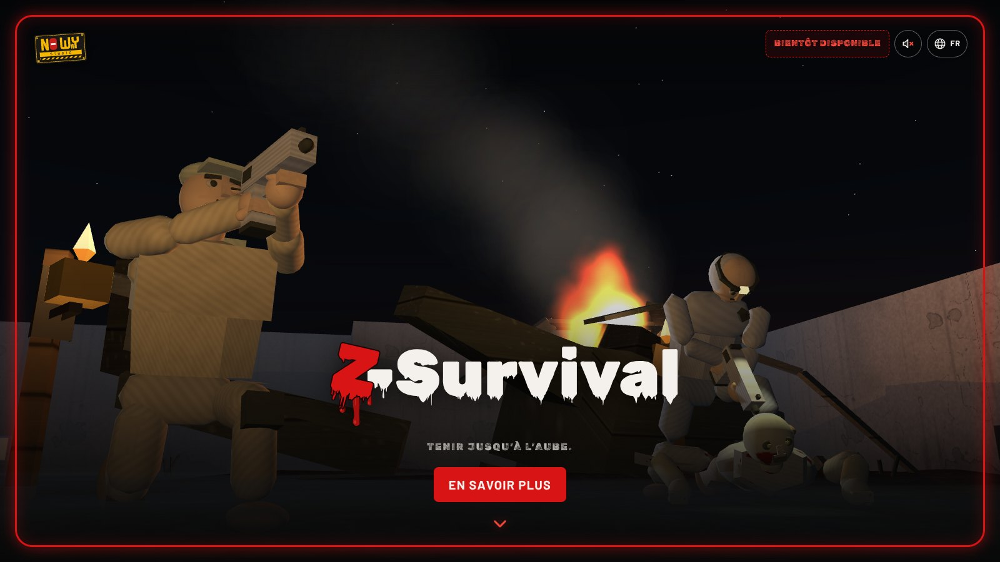
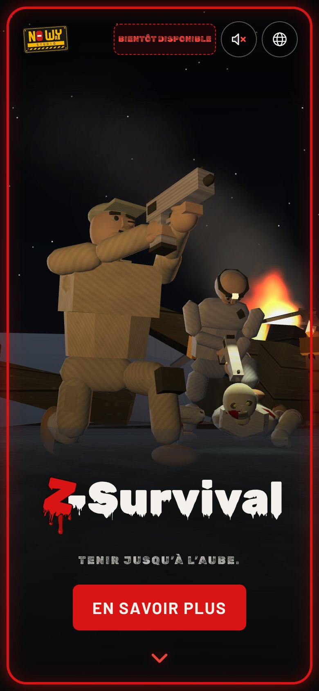
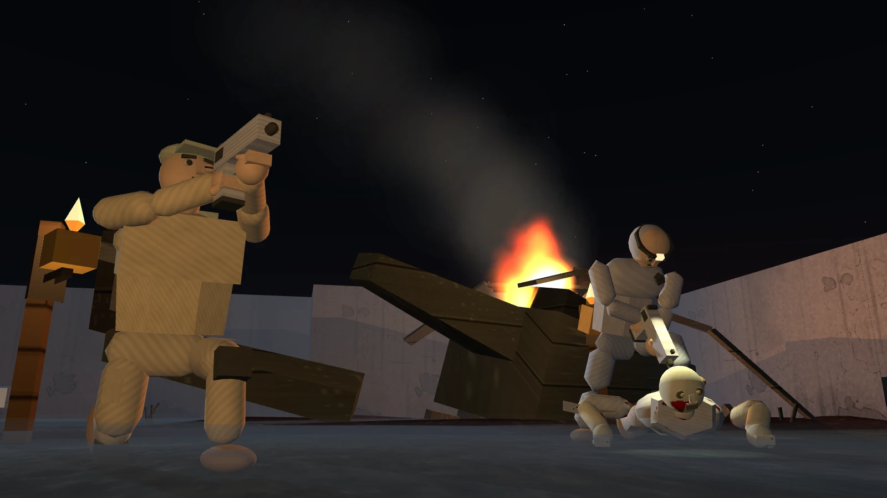
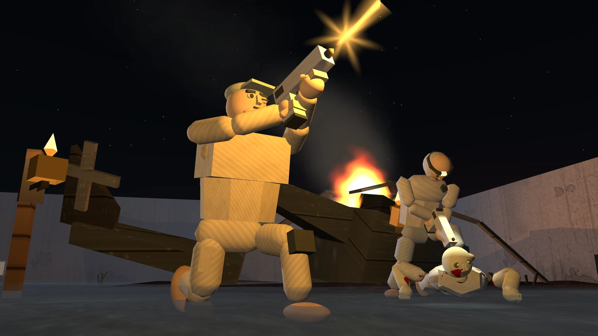

B Avec les éléments du site
Images fixes au début de la boucle (t = 0 s). « Voir en mouvement » ouvre l'aperçu en direct : sur téléphone, il prend tout l'écran, comme l'accueil.


B La scène seule
Sans les éléments du site : au repos (t = 0 s) et à l'instant du coup de feu du personnage 1.


